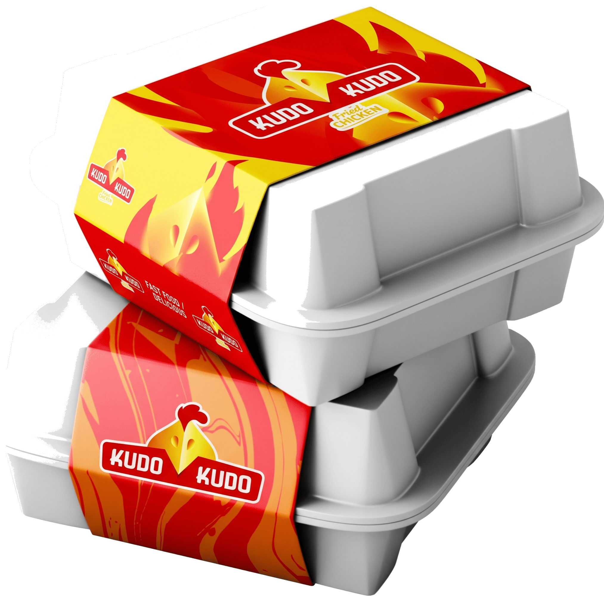

الانبار - الرمادي - شارع الاسكان القديمة


حكاية النكهة الأصيلة في كودو كودو
في كودو كودو (KUDO KUDO)، نأخذكم في رحلة طهي فريدة تمزج بين عراقة الأطباق التاريخية لمدينة شيآن بمقاطعة شنشي، وابتكار أشهى برجر مقرمش وفطائر روجيامو الكلاسيكية المحضرة بأسرار التوابل العائلية المتقنة.